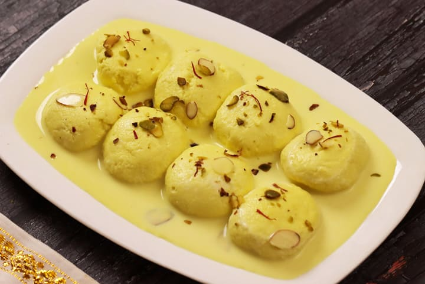
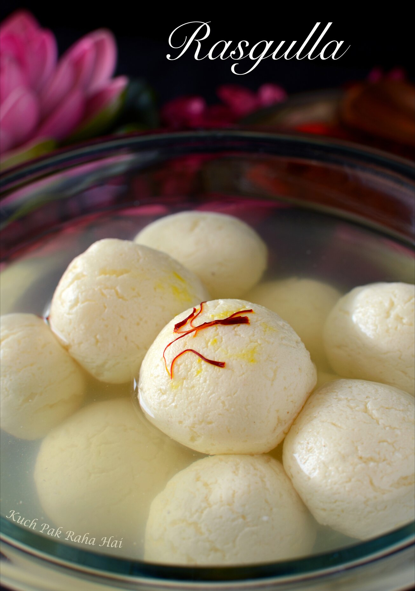

Rasmalai or Ras Malai, is a traditionally South Asian dessert where 'pedas' or little disc shaped mounds of a soft dough are cooked in milk in such a way that they cook through and absorb the flavour of the milk. Traditional Ras malai 'pedas' or dough is made using "chenna" or a South Asian cottage cheese that's made via a process which requires cooking milk and then curdling it. It takes a little time and practice to master the art of making the perfect ras malai discs.
Rasgulla is a popular Bengali sweet made from milk as main ingredient. It is made by curdling milk draining the whey water, collecting the milk solids also called as chenna. This chenna is kneaded well until soft to make balls and then cooked in hot sugar syrup. The balls double in size when cooked in sugar syrup until soft and spongy.
